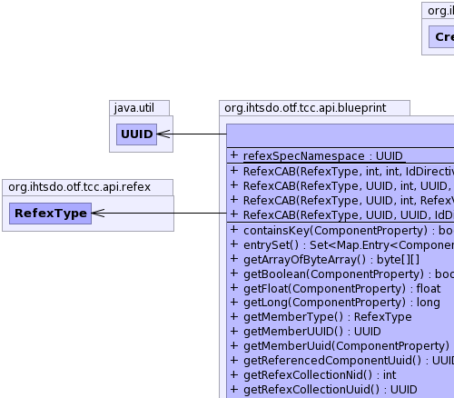
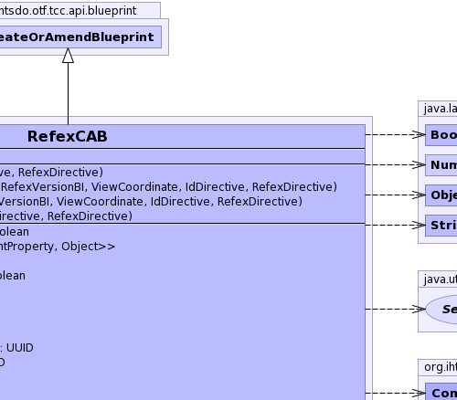
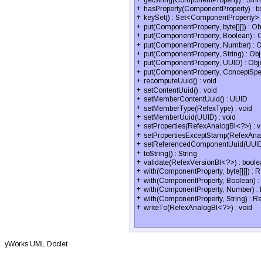
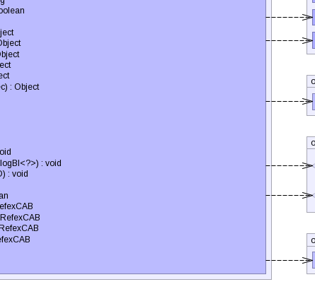
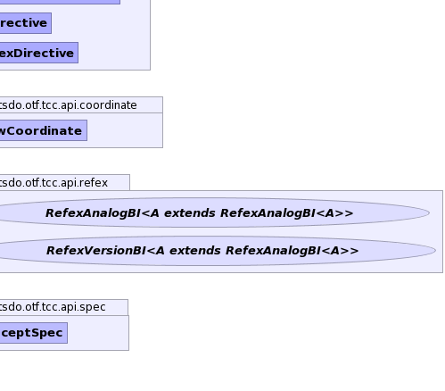

- java.lang.Object
-
- org.ihtsdo.otf.tcc.api.blueprint.CreateOrAmendBlueprint
-
- org.ihtsdo.otf.tcc.api.blueprint.RefexCAB
-
- All Implemented Interfaces:
- PropertyChangeListener, EventListener
public class RefexCAB extends CreateOrAmendBlueprint
The Class RefexCAB contains methods for creating a media blueprint. This blueprint can be constructed into a type ofMediaChronicleBI. This is the preferred method for updating or creating new descriptions.- See Also:
TerminologyBuilderBI,RefexChronicleBI-
  
  
-
-
Field Summary
Fields Modifier and Type Field and Description static UUIDrefexSpecNamespace-
Fields inherited from class org.ihtsdo.otf.tcc.api.blueprint.CreateOrAmendBlueprint
idDirective, pcs, properties, referencedComponent, refexDirective
-
-
Constructor Summary
Constructors Constructor and Description RefexCAB(RefexType memberType, int referencedComponentNid, int collectionNid, IdDirective idDirective, RefexDirective refexDirective)Instantiates a new refex blueprint using nid values.RefexCAB(RefexType memberType, UUID referencedComponentUuid, int collectionNid, RefexVersionBI refexVersion, ViewCoordinate viewCoordinate, IdDirective idDirective, RefexDirective refexDirective)Instantiates a new refex blueprint using nid values and a givenrefexVersion.RefexCAB(RefexType memberType, UUID referencedComponentUuid, int collectionNid, UUID memberUuid, RefexVersionBI refexVersion, ViewCoordinate viewCoordinate, IdDirective idDirective, RefexDirective refexDirective)Instantiates a new refex blueprint using nid values and a givenrefexVersion.RefexCAB(RefexType memberType, UUID referencedComponentUUID, UUID collectionUuid, IdDirective idDirective, RefexDirective refexDirective)
-
Method Summary
Methods Modifier and Type Method and Description booleancontainsKey(ComponentProperty key)Checks if the refex properties contain the specified property.Set<Map.Entry<ComponentProperty,Object>>entrySet()Gets a set of refex properties mapped to their corresponding values.byte[][]getArrayOfByteArray()booleangetBoolean(ComponentProperty key)Gets the boolean associated with this refex blueprint.floatgetFloat(ComponentProperty key)longgetLong(ComponentProperty key)RefexTypegetMemberType()Gets the refex member type of the refex associated with this refex blueprint.UUIDgetMemberUUID()Gets the refex member uuid of this refex blueprint.UUIDgetMemberUuid(ComponentProperty key)Gets the refex member uuid of this refex blueprint.UUIDgetReferencedComponentUuid()Gets the uuid of the referenced component associated with this refex blueprint.intgetRefexCollectionNid()Gets the nid of the refex collection concept associated with this refex blueprint.UUIDgetRefexCollectionUuid()StringgetString(ComponentProperty key)Gets the string associated with this refex blueprint.booleanhasProperty(ComponentProperty key)Checks if the refex properties contain the specified property.Set<ComponentProperty>keySet()Gets the refex properties.Objectput(ComponentProperty key, Boolean booleanValue)Puts the givenbooleanValuein theComponentProperty.BOOLEAN1.Objectput(ComponentProperty key, byte[][] arrayOfByteArray)Puts the givenarrayOfByteArrayin theComponentProperty.ARRAY_BYTEARRAY.Objectput(ComponentProperty key, ConceptSpec spec)Objectput(ComponentProperty key, Number value)Maps the given Numbervalueto the specified refex propertykey.Objectput(ComponentProperty key, String stringValue)Puts the givenstringValuein theComponentProperty.STRING1.Objectput(ComponentProperty key, UUID uuidValue)Puts the givenuuidValuein a uuid based refex property.voidrecomputeUuid()Recomputes the refex member uuid.voidsetContentUuid()Computes the uuid of the refex member and sets the member uuid property.UUIDsetMemberContentUuid()Computes the uuid of the refex member and sets the member uuid property.voidsetMemberType(RefexType memberType)Sets the refex member type of the refex associated with this refex blueprint.voidsetMemberUuid(UUID memberUuid)Sets the refex member uuid associated with this refex blueprint.voidsetProperties(RefexAnalogBI<?> refexAnalog)Sets the properties in the givenrefexAnalogbased on the properties of this refex blueprint.voidsetPropertiesExceptStamp(RefexAnalogBI<?> refexAnalog)Sets the properties in the givenrefexAnalogbased on the properties of this refex blueprint.voidsetReferencedComponentUuid(UUID referencedComponentUuid)Sets the uuid for the referenced component associated with this refex blueprint.StringtoString()Generates a string representation of this refex blueprint.booleanvalidate(RefexVersionBI<?> refexVersion)Validates this refex blueprint's properties against the givenrefexVersion.RefexCABwith(ComponentProperty key, Boolean booleanValue)Puts the givenbooleanValuein theComponentProperty.BOOLEAN1.RefexCABwith(ComponentProperty key, byte[][] arrayOfByteArray)Puts the givenarrayOfByteArrayin theComponentProperty.ARRAY_BYTEARRAY.RefexCABwith(ComponentProperty key, Number value)Maps the given numbervalueto the specified refex propertykey.RefexCABwith(ComponentProperty key, String stringValue)Puts the givenstringValuein theComponentProperty.STRING1.voidwriteTo(RefexAnalogBI<?> refexAnalog)Writes this refex member blueprint to the givenrefexAnalog.-
Methods inherited from class org.ihtsdo.otf.tcc.api.blueprint.CreateOrAmendBlueprint
addAnnotationBlueprint, addExtraUuid, addLongId, addPropertyChangeListener, addPropertyChangeListener, addStringId, getAnnotationBlueprints, getComponentNid, getComponentUuid, getComponentUUID, getIdMap, getInt, getPrimoridalUuidString, getPrimoridalUuidString, getProperties, getReferencedComponent, getStatus, getUuid, propertyChange, removePropertyChangeListener, removePropertyChangeListener, replaceAnnotationBlueprints, setComponentUuid, setComponentUuidNoRecompute, setCurrent, setReferencedComponent, setRetired, setStatus
-
-
-
-
Field Detail
-
refexSpecNamespace
public static final UUID refexSpecNamespace
-
-
Constructor Detail
-
RefexCAB
public RefexCAB(RefexType memberType, int referencedComponentNid, int collectionNid, IdDirective idDirective, RefexDirective refexDirective) throws IOException, InvalidCAB, ContradictionException
Instantiates a new refex blueprint using nid values. This constructor creates a refex member uuid that is computed from a type 5 UUID generator that uses a hash of thememberType,referencedComponentNid, andcollectionNid. This member ID is suitable for all refex collections where there should be no more than one refex member per referenced component.- Parameters:
memberType- the refex member typereferencedComponentNid- the nid of the referenced componentcollectionNid- the nid of the refex collection conceptidDirective- - typically IdDirective.GENERATE_HASH- Throws:
IOException- signals that an I/O exception has occurredInvalidCAB- if the any of the values in blueprint to make are invalidContradictionException- if more than one version is found for a given position or view coordinate
-
RefexCAB
public RefexCAB(RefexType memberType, UUID referencedComponentUUID, UUID collectionUuid, IdDirective idDirective, RefexDirective refexDirective) throws IOException, InvalidCAB, ContradictionException
-
RefexCAB
public RefexCAB(RefexType memberType, UUID referencedComponentUuid, int collectionNid, RefexVersionBI refexVersion, ViewCoordinate viewCoordinate, IdDirective idDirective, RefexDirective refexDirective) throws IOException, InvalidCAB, ContradictionException
Instantiates a new refex blueprint using nid values and a givenrefexVersion. This constructor creates a refex member uuid that is computed from a type 5 UUID generator that uses a hash of thememberType,referencedComponentNid, andcollectionNid. This member ID is suitable for all refex collections where there should be no more than one refex member per referenced component.- Parameters:
memberType- the refex member typereferencedComponentNid- the nid of the referenced componentcollectionNid- the nid of the refex collection conceptrefexVersion- the refex version to use as a patternviewCoordinate- the view coordinate specifying which versions are active and inactiveidDirective- - typically IdDirective.GENERATE_HASHrefexDirective-- Throws:
IOException- signals that an I/O exception has occurredInvalidCAB- if the any of the values in blueprint to make are invalidContradictionException- if more than one version is found for a given position or view coordinate
-
RefexCAB
public RefexCAB(RefexType memberType, UUID referencedComponentUuid, int collectionNid, UUID memberUuid, RefexVersionBI refexVersion, ViewCoordinate viewCoordinate, IdDirective idDirective, RefexDirective refexDirective) throws IOException, InvalidCAB, ContradictionException
Instantiates a new refex blueprint using nid values and a givenrefexVersion. Uses the givenmemberUuidas the refex member uuid.- Parameters:
memberType- the refex member typereferencedComponentNid- the nid of the referenced componentcollectionNid- the nid of the refex collection conceptmemberUuid- the uuid of the refex memberrefexVersion- the refex version to use as a patternviewCoordinate- the view coordinate specifying which versions are active and inactiveidDirective- - typically IdDirective.GENERATE_HASHrefexDirective-- Throws:
IOException- signals that an I/O exception has occurredInvalidCAB- if the any of the values in blueprint to make are invalidContradictionException- if more than one version is found for a given position or view coordinate
-
-
Method Detail
-
setMemberContentUuid
public UUID setMemberContentUuid() throws InvalidCAB, IOException
Computes the uuid of the refex member and sets the member uuid property. UsescomputeMemberContentUuid()to compute the uuid.- Returns:
- the uuid of the refex member
- Throws:
InvalidCAB- if the any of the values in blueprint to make are invalidIOException- signals that an I/O exception has occurred
-
recomputeUuid
public void recomputeUuid() throws InvalidCAB, IOException, ContradictionExceptionRecomputes the refex member uuid. Component- Specified by:
recomputeUuidin classCreateOrAmendBlueprint- Throws:
InvalidCAB- if the any of the values in blueprint to make are invalidIOException- signals that an I/O exception has occurredContradictionException- if more than one version is found for a given position or view coordinate
-
setReferencedComponentUuid
public void setReferencedComponentUuid(UUID referencedComponentUuid)
Sets the uuid for the referenced component associated with this refex blueprint.- Parameters:
referencedComponentUuid- the uuid of the referenced component
-
setMemberUuid
public void setMemberUuid(UUID memberUuid)
Sets the refex member uuid associated with this refex blueprint.- Parameters:
memberUuid- the refex member uuid
-
containsKey
public boolean containsKey(ComponentProperty key)
Checks if the refex properties contain the specified property.- Parameters:
key- the refex property in question- Returns:
true, if the refex properties contain the specified property
-
entrySet
public Set<Map.Entry<ComponentProperty,Object>> entrySet()
Gets a set of refex properties mapped to their corresponding values.- Returns:
- a set of refex properties mapped to their corresponding values
-
keySet
public Set<ComponentProperty> keySet()
Gets the refex properties.- Returns:
- a set of refex properties
-
put
public Object put(ComponentProperty key, Number value)
Maps the given Numbervalueto the specified refex propertykey.- Parameters:
key- the refex propertyvalue- the value to associate with the refex property- Returns:
- the previous value associated with the specified * key,
nullif no value was previously associated
-
put
public Object put(ComponentProperty key, ConceptSpec spec)
-
put
public Object put(ComponentProperty key, String stringValue)
Puts the givenstringValuein theComponentProperty.STRING1. Will throw an assertion error if a different property is used for the key.- Parameters:
key- ComponentProperty.STRING1stringValue- the string to associate with this refex blueprint- Returns:
- the previous value associated with the specified * key,
nullif no value was previously associated
-
put
public Object put(ComponentProperty key, Boolean booleanValue)
Puts the givenbooleanValuein theComponentProperty.BOOLEAN1. Will throw an assertion error if a different property is used for the key.- Parameters:
key- ComponentProperty.BOOLEAN1booleanValue- the boolean to associate with this refex blueprint- Returns:
- the previous value associated with the specified * key,
nullif no value was previously associated
-
put
public Object put(ComponentProperty key, UUID uuidValue)
Puts the givenuuidValuein a uuid based refex property. Will throw an assertion error if the property used for the key is not one of the following:ComponentProperty.MEMBER_UUID,ComponentProperty.UUID1,ComponentProperty.UUID2, orComponentProperty.UUID3.- Parameters:
key- a uuid based refex propertyuuidValue- the uuid to associate with this refex blueprint- Returns:
- the previous value associated with the specified * key,
nullif no value was previously associated
-
put
public Object put(ComponentProperty key, byte[][] arrayOfByteArray)
Puts the givenarrayOfByteArrayin theComponentProperty.ARRAY_BYTEARRAY. Will throw an assertion error if a different property is used for the key.- Parameters:
key- ComponentProperty.ARRAY_BYTEARRAYarrayOfByteArray- the array of byte array to associate with this refex blueprint- Returns:
- the previous value associated with the specified * key,
nullif no value was previously associated
-
toString
public String toString()
Generates a string representation of this refex blueprint. Includes the refex member type and the properties.
-
with
public RefexCAB with(ComponentProperty key, Number value)
Maps the given numbervalueto the specified refex propertykey. Returns this refex member with the new property.- Parameters:
key- a refex propertyvalue- a number value to associate with this refex member- Returns:
- this refex member blueprint with the new property
-
with
public RefexCAB with(ComponentProperty key, String stringValue)
Puts the givenstringValuein theComponentProperty.STRING1. Will throw an assertion error if a different property is used for the key. Returns this refex member blueprint with the new string property.- Parameters:
key- ComponentProperty.STRING1stringValue- the string to associate with this refex blueprint- Returns:
- this refex member blueprint with the new string property
-
with
public RefexCAB with(ComponentProperty key, Boolean booleanValue)
Puts the givenbooleanValuein theComponentProperty.BOOLEAN1. Will throw an assertion error if a different property is used for the key. Returns this refex member blueprint with the new boolean property.- Parameters:
key- ComponentProperty.BOOLEAN1booleanValue- the boolean to associate with this refex blueprint- Returns:
- this refex member blueprint with the new boolean property
-
with
public RefexCAB with(ComponentProperty key, byte[][] arrayOfByteArray)
Puts the givenarrayOfByteArrayin theComponentProperty.ARRAY_BYTEARRAY. Will throw an assertion error if a different property is used for the key. Returns this refex member blueprint with the new array of byte array property.- Parameters:
key- ComponentProperty.ARRAY_BYTEARRAYarrayOfByteArray- the array of byte array to associate with this refex blueprint- Returns:
- this refex member blueprint with the new array byte array property
-
hasProperty
public boolean hasProperty(ComponentProperty key)
Checks if the refex properties contain the specified property.- Parameters:
key- the refex property in question- Returns:
true, if the refex properties contain the specified property
-
writeTo
public void writeTo(RefexAnalogBI<?> refexAnalog) throws PropertyVetoException, IOException
Writes this refex member blueprint to the givenrefexAnalog.- Parameters:
refexAnalog- the refex analog to write this refex blueprint to- Throws:
PropertyVetoException- if the new value is not validIOException- signals that an I/O exception has occurred
-
setProperties
public void setProperties(RefexAnalogBI<?> refexAnalog) throws PropertyVetoException, IOException
Sets the properties in the givenrefexAnalogbased on the properties of this refex blueprint.- Parameters:
refexAnalog- the refex analog to write this refex blueprint to- Throws:
PropertyVetoException- if the new value is not validIOException- signals that an I/O exception has occurred
-
setPropertiesExceptStamp
public void setPropertiesExceptStamp(RefexAnalogBI<?> refexAnalog) throws PropertyVetoException, IOException
Sets the properties in the givenrefexAnalogbased on the properties of this refex blueprint. Does not set the status property.- Parameters:
refexAnalog- the refex analog to write this refex blueprint to- Throws:
PropertyVetoException- if the new value is not validIOException- signals that an I/O exception has occurred
-
validate
public boolean validate(RefexVersionBI<?> refexVersion)
Validates this refex blueprint's properties against the givenrefexVersion.- Parameters:
refexVersion- the refex version- Returns:
true, if this refex blueprint's properties are equal to the specified refex version- See Also:
RefexCAB.ComponentProperty
-
getRefexCollectionNid
public int getRefexCollectionNid()
Gets the nid of the refex collection concept associated with this refex blueprint.- Returns:
- the refex collection nid
-
getRefexCollectionUuid
public UUID getRefexCollectionUuid()
-
getReferencedComponentUuid
public UUID getReferencedComponentUuid()
Gets the uuid of the referenced component associated with this refex blueprint.- Returns:
- the referenced component uuid
-
getString
public String getString(ComponentProperty key)
Gets the string associated with this refex blueprint. Will throw an assertion error if the given key is notComponentProperty.STRING1.- Parameters:
key- ComponentProperty.STRING1- Returns:
- the string associated with this refex blueprint
-
getBoolean
public boolean getBoolean(ComponentProperty key)
Gets the boolean associated with this refex blueprint. Will throw an assertion error if the given key is notComponentProperty.BOOLEAN1.- Parameters:
key- ComponentProperty.BOOLEAN1- Returns:
- the boolean associated with this refex blueprint
-
getFloat
public float getFloat(ComponentProperty key)
-
getLong
public long getLong(ComponentProperty key)
-
getArrayOfByteArray
public byte[][] getArrayOfByteArray()
-
getMemberUuid
public UUID getMemberUuid(ComponentProperty key)
Gets the refex member uuid of this refex blueprint. Will throw an assertion error if the given key is notComponentProperty.MEMBER_UUID.- Parameters:
key- ComponentProperty.MEMBER_UUID- Returns:
- the refex member uuid
-
getMemberUUID
public UUID getMemberUUID()
Gets the refex member uuid of this refex blueprint.- Returns:
- the refex member uuid
-
getMemberType
public RefexType getMemberType()
Gets the refex member type of the refex associated with this refex blueprint.- Returns:
- the refex member type
-
setMemberType
public void setMemberType(RefexType memberType)
Sets the refex member type of the refex associated with this refex blueprint.- Parameters:
memberType- the refex member type
-
setContentUuid
public void setContentUuid() throws InvalidCAB, IOExceptionComputes the uuid of the refex member and sets the member uuid property. UsescomputeMemberContentUuid()to compute the uuid.- Throws:
InvalidCAB- if the any of the values in blueprint to make are invalidIOException- signals that an I/O exception has occurred
-
-